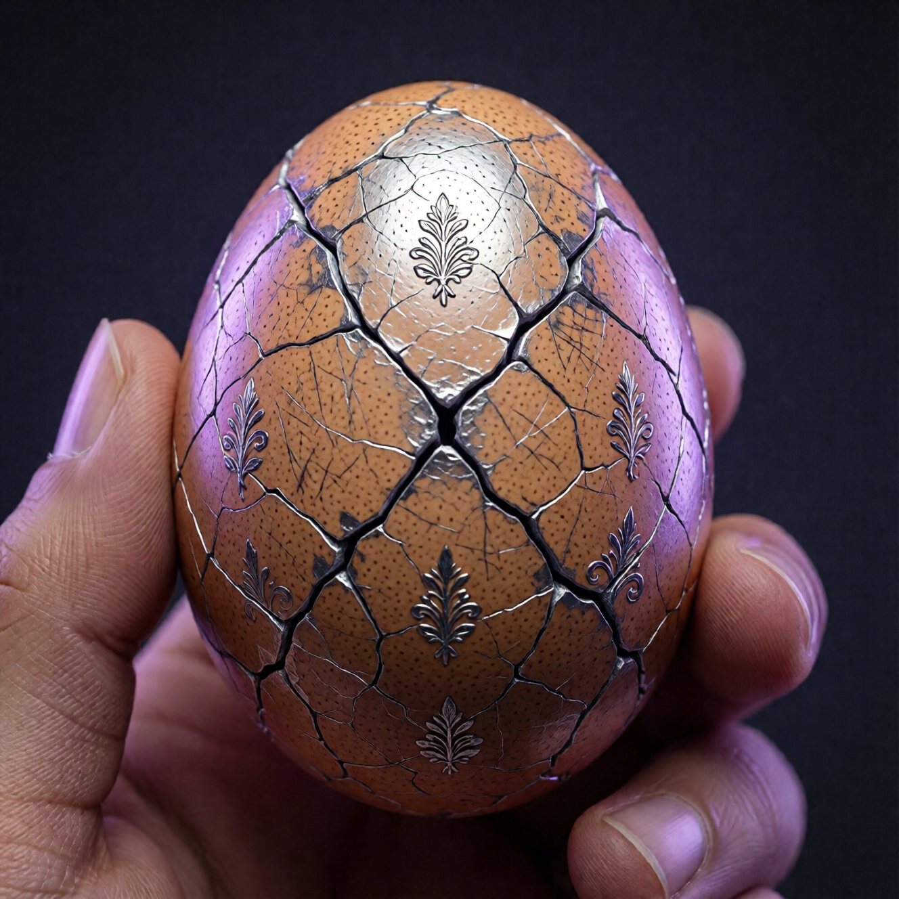

Ложные трещины: иллюзия прогресса

Ты думаешь, что вылупляешься
Ты читаешь книги. Ходишь на практики. Медитируешь. Говоришь правильные слова. Чувствуешь себя «продвинутым».
И ты — всё ещё в яйце.
Добро пожаловать в мир ложных трещин.
Это как GPS, который показывает, что ты едешь, пока машина стоит в пробке. Экран движется. Карта листается. А ты — ни на метр.
Что такое ложная трещина
Настоящая трещина — это когда скорлупа ломается и свет проникает внутрь.
Ложная трещина — это когда ты рисуешь трещину на внутренней поверхности скорлупы и убеждаешь себя, что видишь свет.
Выглядит как прогресс. Ощущается как прогресс. Не является прогрессом.
Это как фотографироваться в спортзале, но не тренироваться. Лента красивая. Мышцы — те же.
Виды ложных трещин
1. Духовное эго
Самая распространённая. Ты начал «духовный путь» — и эго немедленно приватизировало его.
Признаки:
- «Я более осознанный, чем они»
- Коллекционирование практик, учителей, опытов
- Гордость своим «нематериальным» образом жизни
- Снисхождение к «спящим»
Вот типичный диалог:
«Я уже три года медитирую». «И как успехи?» «Ну, я теперь вижу, какие все вокруг неосознанные».
Поздравляю. Ты развил способность осуждать людей в позе лотоса.
Ирония: духовное эго — то же эго, только в белых одеждах. Как волк, надевший овечью шкуру и возомнивший себя пастырем.
2. Интеллектуальное понимание
Ты прочитал книги. Ты всё понимаешь. Ты можешь объяснить просветление в терминах квантовой физики, нейронауки и восточной философии.
Проблема: понимание — не трансформация.
Меню — не еда. Карта — не территория. Слова о пробуждении — не пробуждение.
Это как знать наизусть рецепт борща, но ни разу его не готовить. «Я профессионал! Я читал кулинарную книгу!»
Признаки:
- Много слов, мало изменений
- Способность объяснить, неспособность прожить
- Критика чужих учений без собственной практики
- «Я это уже знаю»
«Я это уже знаю» — любимая фраза ложной трещины. Ты знаешь. И что? Знание без практики — информационный мусор.
3. Эмоциональные пики
Ретриты, церемонии, интенсивные практики — и ВСПЫШКА! Ощущение прорыва. Слёзы, экстаз, «я всё понял».
Через неделю — всё как раньше.
Это — не трещина. Это — флуктуация. Временное расширение, за которым — возврат к норме.
Как влюблённость. Первые три месяца — «это навсегда!» Через год — «а помнишь, как мы ссорились из-за посуды?»
Признаки:
- «На ретрите было прозрение, но потом...»
- Зависимость от практик для «подъёма»
- Разрыв между «духовным» и «обычным» состоянием
- Коллекция «духовных переживаний»
Некоторые ездят на ретриты как другие — в отпуск. «Подзарядиться». Вернуться. Жить как раньше. Повторить.
Это — не вылупление. Это — спа для эго.
4. Смена декораций
Ты уехал в Индию. Или в экопоселение. Или из города в деревню. Ты изменил внешнее — работу, отношения, место жизни.
И обнаружил, что ты — тот же.
Смена декораций — не выход из театра. Ты просто в другой пьесе, но всё ещё на сцене.
Знаешь старый анекдот? Мужик в Гоа подходит к другому мужику: «Брат, ты тут чтобы найти себя?» Второй: «Нет, я тут чтобы потерять жену».
Оба — в бегстве. Оба — в декорациях. Оба — в яйце.
Признаки:
- «Здесь будет иначе»
- Через время — те же проблемы в новом месте
- Бегство под видом поиска
- «Эта страна/город/работа — не для меня»
Куда бы ты ни поехал — ты берёшь себя с собой. Это — плохие новости. И хорошие: работать можно где угодно.
5. Новая роль
Была роль «успешного бизнесмена» — стала роль «духовного искателя».
Была роль «хорошей девочки» — стала роль «пробуждённой женщины».
Содержание изменилось. Структура — та же. Ты всё ещё играешь роль.
Раньше хвастался машиной. Теперь — количеством випассан. Разница — в контенте, не в механизме.
Признаки:
- Жёсткая идентификация с «духовным» образом
- Неспособность смеяться над своей «духовностью»
- «Я теперь — такой»
- Духовная одежда, духовное имя, духовный образ жизни как идентичность
Тест: можешь ли ты представить себя без всего этого духовного антуража? Если нет — ты надел новый костюм на старое тело.
История о продвинутом духовном искателе
Один мой знакомый — 15 лет практики. Все традиции. Все учителя. Все страны.
Он мог говорить о дзене, адвайте, тантре, каббале. Знал санскрит и тибетский. Медитировал три часа в день.
Однажды его подрезали на дороге.
Знаешь, что он сделал? Догнал, опустил окно и орал матом пять минут. Потом ехал и кипел ещё полчаса.
Три часа медитации в день. Пятнадцать лет. И один подрезавший водитель — всё снёс.
Это — ложная трещина в действии. Много практики. Мало интеграции.
Почему ложные трещины опасны
Они успокаивают.
«Я уже работаю над собой. Я уже на пути. Я уже не как все.»
Это успокоение — яд. Оно останавливает реальное движение.
Человек, который знает, что спит — может проснуться. Человек, который думает, что уже проснулся — продолжит спать.
Это как болезнь, которая не болит. Рак на ранней стадии — не чувствуется. Поэтому его не лечат. Поэтому он убивает.
Ложная трещина — рак духовного пути. Не болит. Не заметна. И блокирует реальный рост.
Как отличить настоящую трещину от ложной
Тест 1: Смирение
Настоящий пробой делает скромнее. Ложный — надменнее.
После реальной трещины: «Я ничего не знаю. Какой я был дурак. Сколько ещё впереди». После ложной трещины: «Теперь я понимаю. Они не понимают. Я — впереди».
Реальный рост делает тебя меньше, не больше. Ты видишь, сколько ещё не знаешь. Как море, которое открывается после пруда.
Тест 2: Простота
Настоящий пробой упрощает. Ложный — усложняет.
После реальной трещины: жизнь становится проще, слов — меньше. После ложной трещины: новые концепции, новый жаргон, новые объяснения.
Если тебе нужны сложные термины, чтобы объяснить свой «прогресс» — это ложная трещина.
«Я интегрировал свой теневой аспект через соматическую практику, что привело к нуминозному переживанию недвойственности».
Перевод: «Я поплакал на терапии».
Тест 3: Юмор
Настоящий пробой даёт способность смеяться над собой. Ложный — делает серьёзнее.
Если ты не можешь посмеяться над своей «духовностью» — это духовное эго.
«Не смешно. Это — священный путь».
Если путь такой священный, что над ним нельзя шутить — это не путь. Это — религия эго.
Тест 4: Обычная жизнь
Настоящий пробой меняет обычную жизнь. Ложный — создаёт «особую» жизнь рядом с обычной.
Если твоя «духовность» — только на ретритах, в медитации, в разговорах о духовности — это ложная трещина.
На ретрите — просветлённый. В пробке — истерик. На медитации — Будда. В семейной ссоре — Гитлер.
Так не работает. Либо везде, либо нигде.
Тест 5: Страдание
Настоящий пробой меняет отношение к страданию. Не убирает его — меняет. Ложный — обещает избавление от страдания.
Если ты «на пути» и всё ещё веришь, что однажды перестанешь страдать — ты в ложной трещине.
Страдание — часть жизни. Просветлённый — не тот, кто не страдает. А тот, кто не создаёт страдание из страдания. Не добавляет второй слой.
Больно — больно. Без «почему я?», «это несправедливо», «когда это кончится?»
Что делать, если ты в ложной трещине
Хорошие новости: осознание — уже половина выхода.
Шаг 1: Признай
«Кажется, я застрял в ложной трещине.»
Это больно. Эго не хочет это признавать. Столько лет практики! Столько книг! Столько денег на ретриты!
Но честность — единственный путь.
«Я думал, что продвинулся. Возможно — не так сильно, как думал».
Шаг 2: Останови
Перестань делать то, что создаёт иллюзию прогресса.
Может быть, это очередной ретрит. Может быть, новая книга. Может быть, разговоры о духовности.
Остановись. Побудь в неопределённости. В скуке. В обычности.
Это — страшно. Без практик ты — просто человек. Без «пути» — просто живёшь.
И именно это — нужно.
Шаг 3: Вернись к основам
Не экзотические практики — базовые вещи.
Честность с собой. Внимание к телу. Присутствие в моменте. Отношения с реальными людьми.
Скучно? Хорошо. Скука — признак того, что эго не развлекается.
«А как же випассаны? Тантра? Холотропное дыхание?»
Всё это — инструменты. Но если базовый фундамент — кривой, инструменты не помогут.
Шаг 4: Примени критерии
Смирение. Простота. Юмор. Обычная жизнь. Страдание.
Проверяй себя. Регулярно. Без снисхождения.
«Я стал смиреннее?» — честно. «Жизнь проще?» — честно. «Могу смеяться над собой?» — честно.
Если ответы «нет» — возвращайся к шагу 1.
Практика «Аудит духовного эго»
Ответь честно:
- Когда в последний раз ты чувствовал превосходство над «обычными людьми»? (Вчера? Сегодня? Сейчас?)
- Сколько духовных концепций ты используешь, чтобы избежать обычных проблем? («Это карма», «Это урок», «Я отпускаю» — вместо решения проблемы)
- Можешь ли ты провести неделю без разговоров о духовности, медитации, практиках? (Честно — можешь?)
- Есть ли у тебя «особый» язык, который непосвящённые не понимают? (И нравится ли тебе это?)
- Как ты реагируешь, когда кто-то критикует твой «путь»? (Спокойно? Или «они просто не понимают»?)
Если честные ответы тебя не радуют — отлично. Это — начало.
Если честные ответы тебя радуют — проверь ещё раз. Возможно, ты не был достаточно честен.
Парадокс
Вот парадокс: даже распознавание ложных трещин может стать ложной трещиной.
«Я вижу свои ложные трещины. Я более осознанный, чем те, кто не видит.»
И — снова ловушка. Новый этаж духовного эго.
«Я знаю про духовное эго. Значит, я его преодолел». — Нет. Значит, ты знаешь термин.
Выход? Юмор. Смирение. И готовность снова оказаться в ловушке.
Потому что ты — будешь. Снова и снова. И это — нормально.
Вопрос не в том, чтобы избежать ловушек. Вопрос в том, чтобы быстрее их замечать. И меньше в них сидеть.
Итог
Ложные трещины — иллюзия прогресса. Духовное эго, интеллектуальное понимание, эмоциональные пики, смена декораций, новые роли.
Все они — способы остаться в яйце, думая, что вылупляешься.
Проверяй себя. Смирение, простота, юмор, обычная жизнь, страдание.
И помни: даже это знание может стать ловушкой. Поэтому — перечитывай эту главу. И каждый раз — честно.